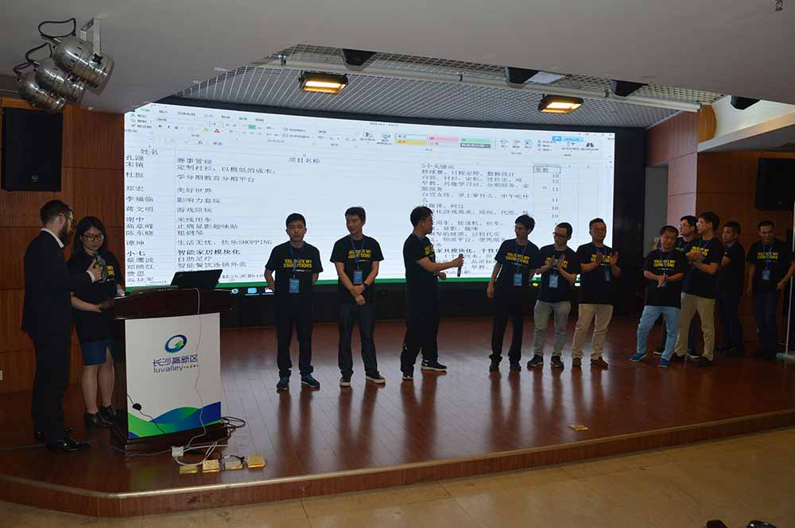
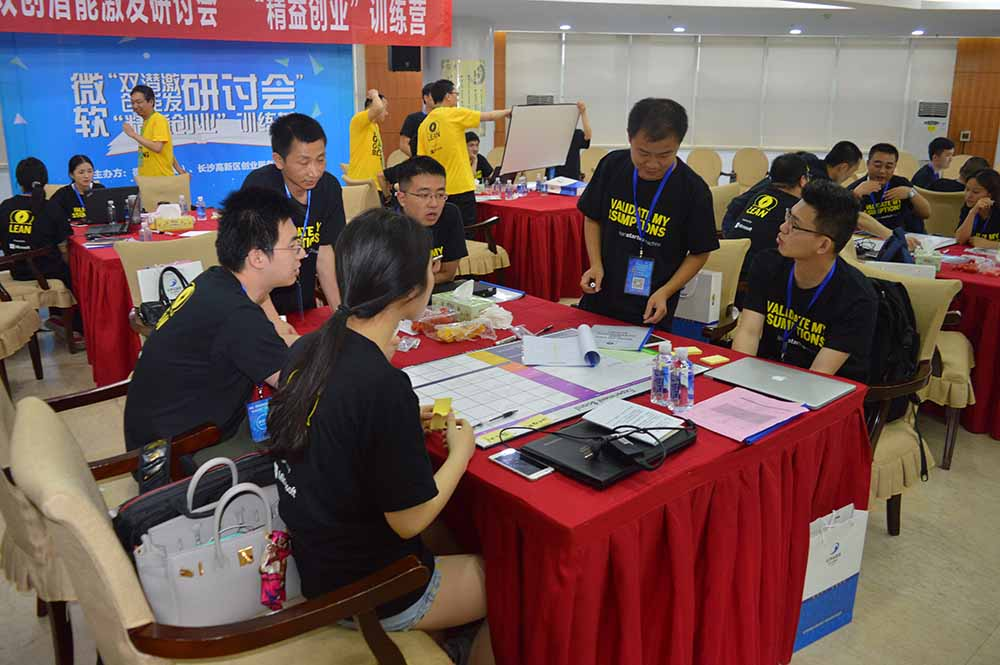
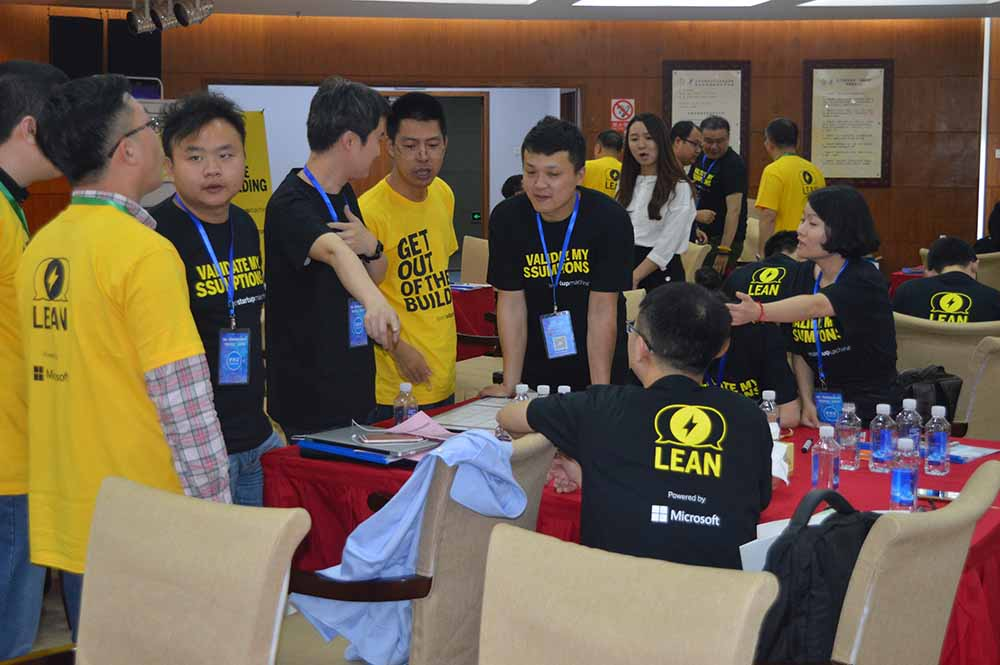

微软双创潜能激发研讨会——【动感瞬间】
2016年06月13日
5月13日下午，由微软（中国）有限公司、长沙高新区创业服务中心主办的微软“双创潜能激发研讨会”在长沙举行，为期3天的“精益创业”训练营正式开营。这是“精益创业”模式首次进入湖南。

Lean Startup Machine（精益创业器）公司和Javelin公司的创始人兼CEO 特雷弗·欧文斯（右）教学员们用Javelin Board
迎接“互联网+”与“双创”趋势下，有能力举办双创潜能激发峰会，是孵化平台的运营商成功关键。微软“云暨移动应用孵化计划”团队精心规划此次研讨会，旨在提升创业意识、技术方法与能力，从业务理念与产品方案的创设开始，并通过构想与不断检验的过程，进而形成可行性的创业方案。

长沙高新区创业服务中心主任 刘荣利 （左）（微软）中国有限公司 微软大中华区战略联盟暨运营管理总经理 戴子珽（右）

学员导师大合照
微软引进领先的“创新潜能激发训练模型”，邀请全国顶级创业导师，带领着具有丰富创业经验的咨询团队，激发学员有创业激情与创意构想，梳理与精练创意想法，完成创新产品方案的设计，帮助与会者创造出符合客户需求，能解决客户痛点的业务/产品解决方案，成为可孵化的项目产品，减少创新孵化风险，加速双创孵化进程。

创始人用50秒演讲项目

竞选成功的11支项目的创始人上台推荐项目并组队
研讨会以团队合作的形式，通过分组讨论、交流学习、案例研究、需求检验等实践活动，在指定时间内，完成创业项目、业务模型、产品构想的成熟实施方案。运用“创新潜能激发训练模型”，对创新方案设想进行反复验证、进而转变创新思路，经由不断调整各种假设，达到更精准的客户需求及市场趋势，完善创业构想，并形成可行性创业方案。

学员们头脑风暴的过程

学员们用Javelin Board开发Idea

学员们用实例来举证

更多详情请访问www.msstartup.cn